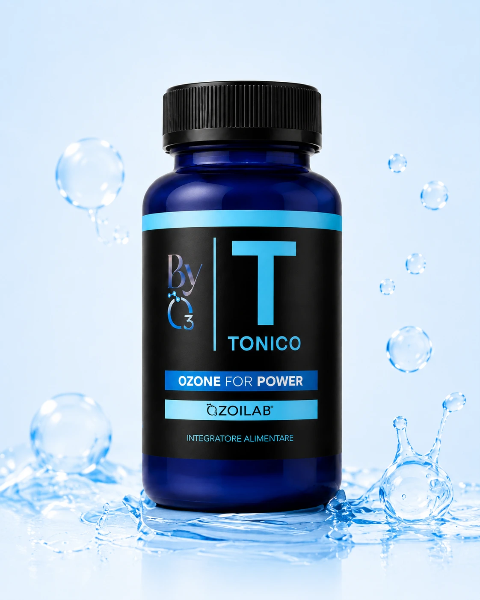
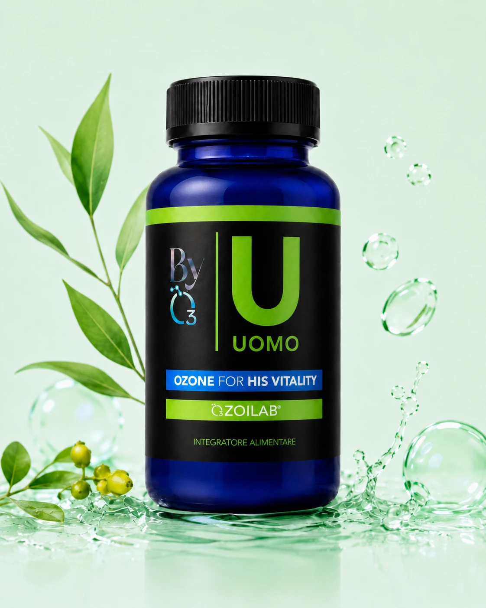
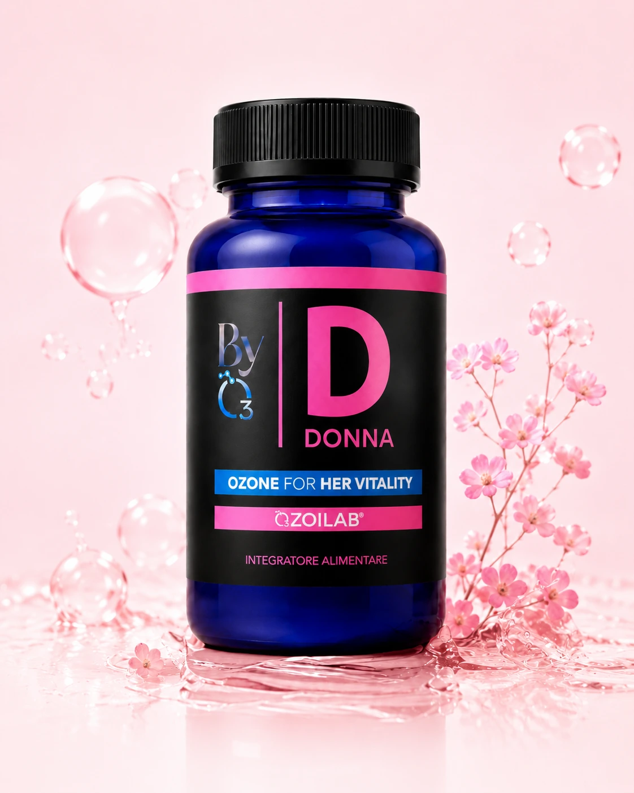
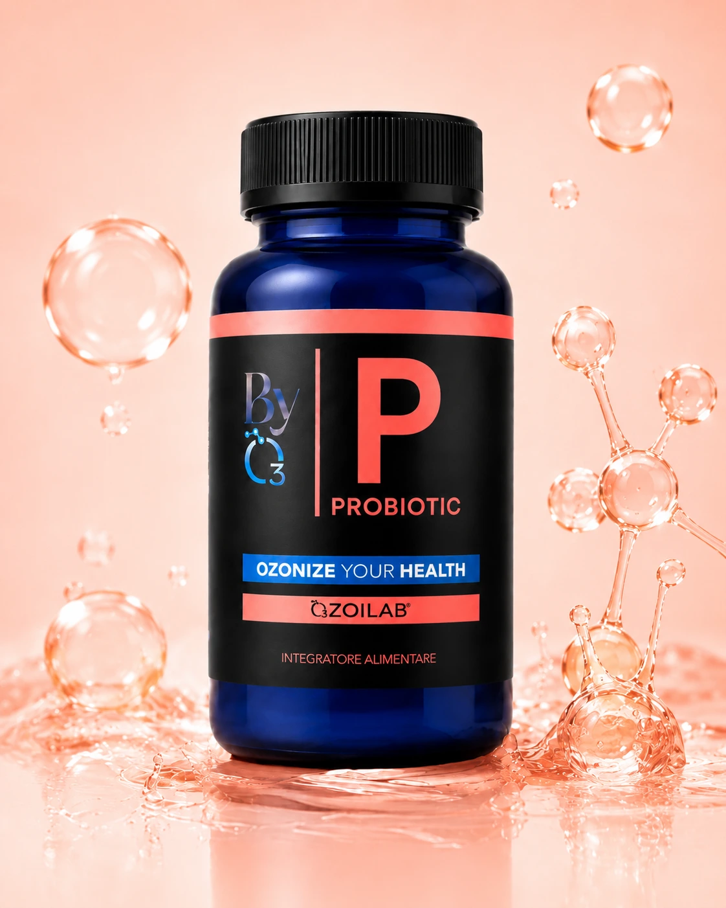
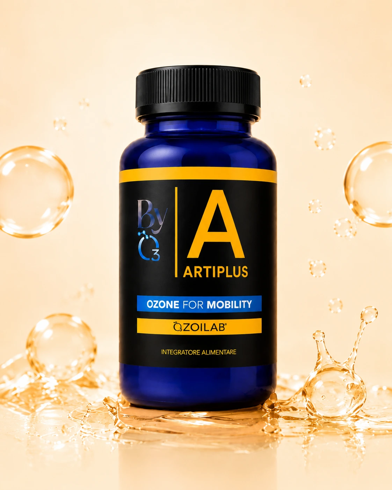

Tonico
Tono fisico e mentale, soprattutto nei periodi di stanchezza.
ScopriBYO3 | Linea OZOILAB
Ogni integratore BYO3 parte da OZOILAB®, olio di girasole ozonizzato e stabilizzato, e lo abbina ad attivi selezionati per un bisogno quotidiano specifico.


Tono fisico e mentale, soprattutto nei periodi di stanchezza.
Scopri
Vitalità maschile, energia quotidiana e routine adulta.
Scopri
Equilibrio femminile, umore e benessere uro-genitale.
Scopri
Microbiota, transito intestinale e digestione quotidiana.
Scopri
Mobilità articolare, elasticità e supporto alla funzionalità.
ScopriLa differenza BYO3 è nella combinazione tra ingrediente-firma, formule multi-attivo e approccio graduale. Due capsule al giorno, circa trenta giorni per confezione.
Olio di girasole ozonizzato e stabilizzato come elemento comune della linea.
Ogni prodotto abbina l'olio ozonizzato ad attivi coerenti con il bisogno.
La comunicazione BYO3 parla di costanza, non di promesse immediate o scorciatoie.